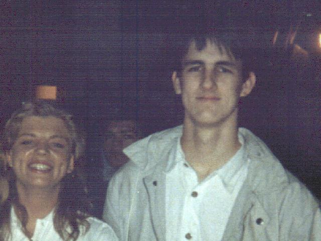

The big picture.
This pic was taken in about 1988 in a TV studio in London, near Docklands. I was about 19 yrs old at the time. My 'co-star' was one of the presenters of 'Network 7', a Channel 4 'Yoof' program live one Sunday lunchtime..

 Back to the JunkPage
Alister
Back to the JunkPage
Alister